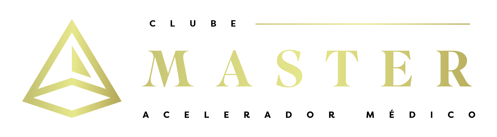

Existe um Segundo Funil — o que acontece depois da venda. É nele que está sua próxima virada de faturamento: reter, renovar e ascender a base que você já pagou caro pra conquistar.
Responda algumas perguntas e receba, na hora, um retrato da saúde da sua recorrência — e onde está o vazamento que não aparece em nenhum relatório.
Sem custo · leva menos de 2 minutos
Algumas empresas que confiam em nós

Você aprendeu a puxar cliente pra dentro. Tráfego, conteúdo, lançamento, aplicação — tudo virado pra fora, pra conquistar gente nova.
Mas o dinheiro de verdade de quem trabalha com acompanhamento não está na venda.
Está na recorrência. E a recorrência mora no lugar que quase ninguém opera: o pós-venda.
É lá que o cliente bom some sem avisar. Que a renovação é decidida no chute. Que a evolução do acompanhamento fica largada.
Um vazamento silencioso que não aparece em nenhum relatório — só no fim do mês, quando a base não cresce do jeito que deveria.
E a resposta da maioria é sempre a mesma: rodar mais tráfego. Gastar mais pra entrar gente nova por cima, enquanto a antiga escorre por baixo.
Duas curvas de receita ao longo dos ciclos de renovação. Uma vem de cliente novo. A outra vem de quem já está dentro. Repare no que acontece entre elas com o passar do tempo.
Todo mundo passa o dia inteiro operando a curva de baixo.
O Segundo Funil é a distância entre as duas — e ela só aumenta com o tempo.
Representação ilustrativa do conceito de receita da base instalada versus receita de novos clientes,
adaptado de Customer Success (Mehta, Steinman & Murphy).
O quanto da sua base está em risco de sair sem que você perceba a tempo de agir
Se as suas decisões de renovação são feitas com dado ou no feeling — e quanto isso custa
Onde está a sua próxima virada de faturamento: na base que você já tem, não no tráfego
Um índice claro da saúde do seu Segundo Funil — de saudável a crítico, com o que fazer a seguir
No fim você vai enxergar seu negócio de um jeito que não dá mais pra desver.
Já gerou mais de R$ 90 milhões atuando nos bastidores de grandes operações digitais. Passou anos construindo o funil de aquisição de dezenas de negócios — até perceber que o crescimento estava vazando pelo lado que ninguém olhava.
A mente técnica por trás do motor de receita com IA. Pegou um problema que toda operação recorrente tem — e transformou em tecnologia: um sistema que enxerga o que nenhum time consegue enxergar sozinho.
Já são mais de 800 clientes sendo acompanhados e mais de R$ 10M em receita salva.
Em 2 minutos, o diagnóstico te mostra onde está o vazamento — e o quanto ele já está te custando.
Gratuito, sem compromisso. Você recebe o resultado na hora, direto na tela.
Você já vê o resultado na tela agora. Deixe seus dados pra receber a análise detalhada e as recomendações no seu WhatsApp.
Fale com o time e veja como aplicar isso na sua operação.